——据说是IBM董事长托马斯·沃森在1943年说的
5是第一个拒绝被归类的数字。它是柏拉图多面体的数量，也嵌入在罗杰斯—拉马努金恒等式中，同时它还在一元五次方程的解析解中插了一手，并且适合完美的镶嵌。天才孤独症者丹尼尔·塔穆特说：“五是电闪雷鸣，惊涛拍岸。”你将会看到它展现出的力与美。
米盖尔五圆定理
从一个“主圆”开始，构造5个圆，中心都位于主圆上，并且在主圆上两两相交（图5.1）。然后通过相邻圆的内交点作5条直线。五圆定理证明这5条线组成的五角星的顶点位于这5个圆上。
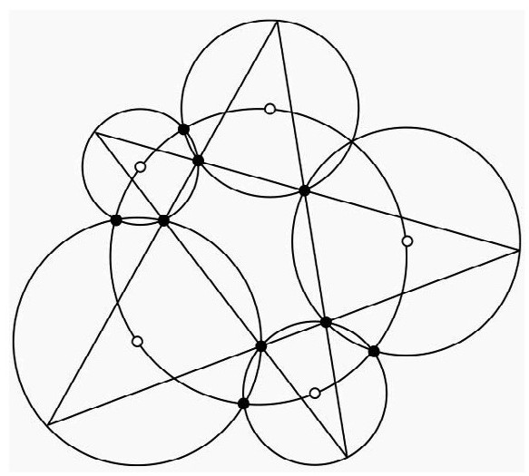
图5.1 米盖尔五圆定理
柏拉图多面体
从欧几里得的时代至今，5个柏拉图多面体一直保持着迷人的魅力。希腊人将每种多面体与一种元素配对，开普勒则将它们与当时已经知道的5种地外行星关联起来。现在美国数学学会的标志就是著名的正二十面体的图案。那么为什么柏拉图多面体正好是5种呢？
柏拉图多面体是由全等正多边形组成的凸多面体，每个顶点有相同数量的边相交。立方体就是柏拉图多面体：每个面都是全等正方形，每个点有3条边相交。要识别柏拉图多面体，我们需要在这些特征之间建立关联。用E、F和V分别表示多面体的边、面和点的数量。用P表示包围面的边的数量，Q表示在每个点相交的边的数量。要计算边的总数，可以用包围面的边的数量乘以面的数量。由于每条边在两个面各计数了一次，可以得到
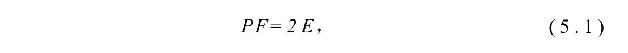
另一个计算边的数量的方法是用各点的边数乘以点的数量，同样，每条边连接两个点，因此
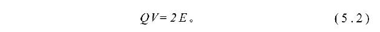
表5.1五个柏拉图多面体的特征
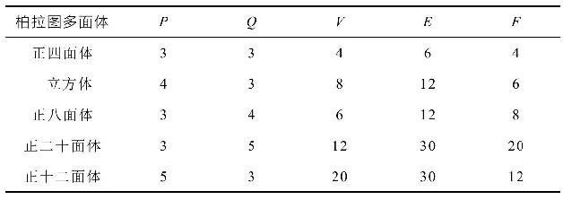
如果将多面体“拉平”还可以得到一个关系。选取一个面，对其进行拉伸，让多面体平铺在平面上。被拉开的面变成了得到的图的外部区域，这样我们就能应用第2章的欧拉公式：
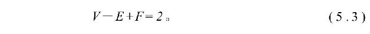
式（5.1）—（5.3）由P和Q得到E、F和V：
由于所有量都是正数，因此必定有（P−2）（Q−2）＜4。这个严苛的约束只允许5种可能（表5.1）。这些美妙的公式表明它们之间也具有柏拉图式的感性关系。
解多项式
所有中学生都学过可怕的求根公式：一元二次方程ax2+bx+c=0的解是
虽然这个公式笼罩着神秘，但它的证明只要配方就够了：
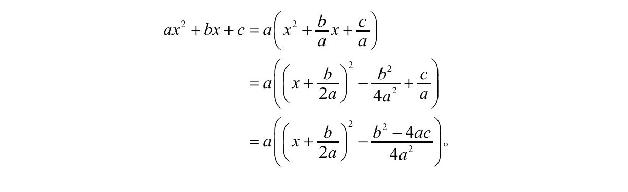
让这个式子等于0可以得到
然后开方得到式（5.4）。一元二次方程的这个通解早在1000多年前就知道了。
求一般的一元三次方程ax3+bx2+cx+d=0的根则要困难得多，直到16世纪早期才解决。这要归功于意大利人费罗、塔尔塔利亚和卡尔达诺。代数形式的解虽然有，但是太过费解，在这里不给出具体细节。与一元二次方程不同，很少有数学家能够当场推出或凭记忆写出这些公式。几乎在同时四次方程由另一位意大利人费拉里解出，不过他的解依赖于三次方程的解，而他当时不知道这个结果，因此耽搁了成果的发表，在此期间，他的老师在1545年同时发表了三次和四次方程的解。
虽然取得了这些成就，还是没有人能解一般的五次方程。意大利人费尽心力也没能解决这个问题。数学家经常需要求多项式方程的根，有时候会涉及五次以上的方程，为此，研究者发展了精确逼近方程的根的数值技术。具有讽刺意味的是，逼近现在成了求根的常规方法，就连三次和四次方程也是用这种方法。
过了250多年，五次方程的问题才最终解决。1799年，保罗·鲁菲尼取得了重大进展，但直到1823年才由挪威人阿贝尔彻底解决（图5.2）。许多数学家会期望五次方程的解会比三次和四次方程更加复杂，但结果还是让他们震惊。阿贝尔—鲁菲尼定理证明五次或更高次的多项式方程没有一般的代数形式的解，这个定理并不是说所有五次多项式都不可解，方程（x−1）（x−2）（x−3）（x−4）（x−5）=0具有解x=1，2，3，4，5。这个定理说的是存在这样的五次多项式，其根无法表示为和、差、积、商和根的组合（就像二次和三次方程那样）。方程x5−x+1=0就是不可解方程的例子。
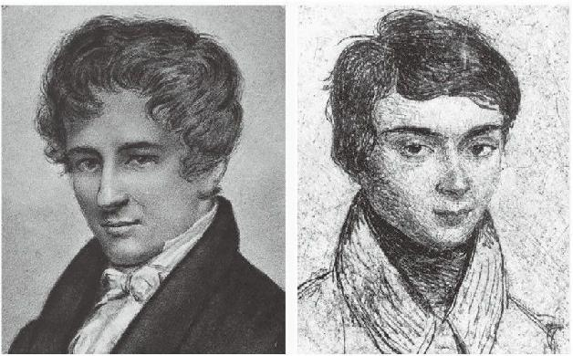
图5.2 阿贝尔（左）和伽罗瓦（右）
1824年，阿贝尔得到了他的结果，并分发给了一些数学家。为了节省印刷费用，他把结果精简为6页，后来才在奥古斯都·克雷尔新创立的期刊上发表了更长、更完整的版本。阿贝尔不仅受困于经济问题，健康也在恶化，他在到巴黎进行学术访问时感染了肺结核。克雷尔在得知阿贝尔的状况后，利用自己的影响力为阿贝尔在柏林谋得了一个职位。遗憾的是太迟了，阿贝尔26岁时就去世了。
此后不久，另一个年轻人，法国的伽罗瓦在这个领域独立作出了重要贡献。伽罗瓦发现了判别五次或更高次多项式方程是否可解的方法。阿贝尔和伽罗瓦的成果成了此后诞生的抽象代数领域的基础。伽罗瓦的方法很独特，抽象代数有一个分支就叫做伽罗瓦理论。不幸的是，在他的有生之年没有看到自己的数学思想被其他人接受。除了对数学感兴趣，伽罗瓦还是个政治狂热分子，并为此招惹麻烦。他因为非法穿着已被解散的国民卫队炮兵队的制服而被判入狱半年。他的麻烦因卷入一场决斗而达到高潮，无法确定这场决斗是因为政治还是女人。据说伽罗瓦在决斗的前夜匆忙将自己的数学发现写在纸上，他的担心是对的，伽罗瓦在决斗后的第二天死去，年仅20岁。
丢番图逼近
在第1章的末尾我们遇到了斐波那契数和黄金比率。斐波那契数的定义是F1=F2=1和
黄金比率ϕ是
＜p＞
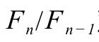
对ϕ的逼近程度怎样？丢番图分析研究了有理数对无理数的逼近程度。狄利克雷逼近定理证明，如果α是无理数，则有无穷多组整数p和q满足不等式如果右边收紧，比如0.5/q2，则仍然会有无穷多组解。我们能将常数0.5缩得更小，并且仍然保证有无穷多组解吗？这就是赫尔维茨定理的精髓：方程
有无穷多组解。此外，如果常数
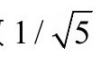
继续缩小，定理将不再成立。让α等于黄金率可以揭示出这一点。如果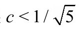
，则方程最多有有限数量的解。斐波那契数的爱好者又有了一个击掌庆祝的理由。
佩特森图
软件测试通常需要用各种输入去检验软件的反应，考虑周全的测试能够发现容易忽略的缺陷。在数学中，有时候也根据这种思路修正发展中的理论。在图论中，佩特森图就是一种很棒的“测试图”，因为它是许多看似合理的观点的反例。
佩特森图是无向图，通常描绘为五边形连接一个内部的五角星（图5.3）。佩特森图具有哈密顿路——访问每个节点刚好一次的路径——但没有哈密顿回路，哈密顿路的起点绝不会是终点。不过，佩特森图是最小的亚哈密顿图：它自己没有哈密顿回路，但拿掉一个点后形成的所有图都具有哈密顿回路。亚哈密顿图来自流动推销员问题（TSP）的整数规划解。TSP问的是访问指定城市集的最短路径，这个问题在资源配置中具有广泛用途。
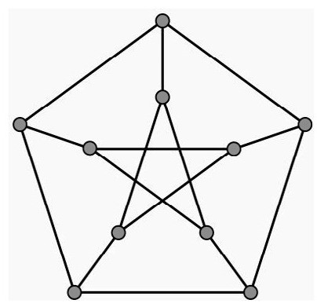
图5.3 佩特森图
佩特森图也是最小的蛇鲨图。蛇鲨图具有以下特性：
虽然佩特森图有这些有趣的特性，但它不是平面图。也就是说，如果把它画在平面上，无论怎样画都会有边相互跨越。蛇鲨图早在1880年就引起了人们的兴趣，当时证明了四色定理意味着所有蛇鲨图都不是平面图。这个名称是著名数学家马丁·加德纳取自刘易斯·卡罗尔的诗《猎鲨记》中神秘费解的事物。图论学家威廉·图特猜想所有蛇鲨图都包含有佩特森图（移去足够的边和点后会得到佩特森图）。这个结果在1999年已经被宣称证明，但直到2013年，具体的细节还没有公开。
幸福结局问题
同许多创造性活动一样，数学家也会沉浸在自己的作品中，有时候时间不知不觉就过去了好久。他们在学习——尤其是发现——数学真理时感受到的美与人们在聆听美妙的音乐时的感受差不多。在这样的过程中，如果遇到的难题最终得以解决，就称为幸福结局。但厄多斯提到的幸福结局问题是另一个问题。
1933年，布达佩斯的一群学生经常聚到一起讨论数学问题。埃丝特·克莱茵在讨论中提出了一个问题：给定平面上的5个点，证明其中4个点必定构成凸四边形。厄多斯和乔治·塞克尔斯也参与了讨论，在克莱因解释了自己的解决方法后，厄多斯和塞克尔斯继续深入研究了这个问题，并在1935年发表了一篇论文，现在被认为是组合几何学的奠基之作。克莱因提出的问题还带来了其他成果，克莱因和塞克尔斯因此走到了一起，两人于1937年结婚，厄多斯因此将克莱因的问题戏称为幸福结局问题。
这个问题的解很直接。首先，找到集合的凸壳。如果凸壳是五边形，则意味着其中任意4个点都能构成凸四边形；如果凸壳是四边形，则凸壳的四个角就是要找的结果；如果凸壳是三角形，则其他两个点在三角形内部，通过这两点作一条直线，三角形上至少有两个点会落在直线的同一侧，这两个点加上内部的两个点就构成凸四边形。图5.4给出了3种情形。
1935年，厄多斯和塞克尔斯推广了这个结果。他们证明对于任意的n≥3，都存在最小的整数N（n），使得平面上任意位置的N（n）个点的集合，必然包含n个点可以构成凸n边形。塞克尔斯还猜想N（n）=1+2n−2。很显然N（3）=3，而根据幸福结局问题，有N（4）=5，后来又证明了N（5）=9。但是对n≥6的N（n）则很难确定。1996年，在厄多斯去世前不久，他为塞克尔斯猜想的证明提供了500美元的奖金。
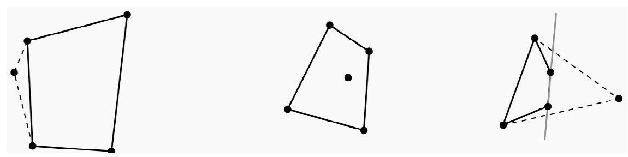
图5.4 当凸壳分别为5个点、4个点和3个点时构造的凸四边形
克莱因和塞克尔斯结婚后不久就面临严酷的政治环境，他们是犹太人，不得不在1939年离开了欧洲，寓居于上海。1948年，塞克尔斯获得了澳大利亚阿德莱德的一个职位，在那里继续自己的数学家生涯。2005年8月28日，塞克尔斯和克莱因在一个小时内相继去世。
镶嵌
假设你获得了一份给一个大房间铺瓷砖的工作（不用担心，我们会指导你），雇主厌倦了方形和矩形瓷砖，想让你铺点别的，你还能用什么形状的瓷砖来铺呢？数学家称这种排列为镶嵌。
如果你只用全等正多边形，则只有3种可能：正方形、等边三角形和正六边形，这些是正则镶嵌。如果可以用多种正多边形，并且每个点周围的砖块集是一样的，则会增加8种排列，它们被称为半正则镶嵌或阿基米德镶嵌。如果你去掉这些限制，则有无数种可能。
许多艺术家和设计师通过在砖块上添加图案和花纹来增加镶嵌的对称美感。在各种文化墙和地毯上都可以看到美丽的镶嵌。西班牙的阿尔罕布拉宫是伊斯兰镶嵌艺术的博物馆，这种艺术启发荷兰艺术家艾舍尔发明了各种迷人的镶嵌。
只用正五边形无法构造镶嵌，因为108°的内角无法拼到一起（如果你不信，可以试一试），但五边形可以与其他形状组合。16世纪初，德国艺术家阿尔布莱希特·杜勒发现了用正五边形和菱形构造的镶嵌。一个世纪后，开普勒——是的，就是那个研究行星的哥们——发现了一种用正五边形、五角星和“融合的十边形”构造的镶嵌（图5.5）。
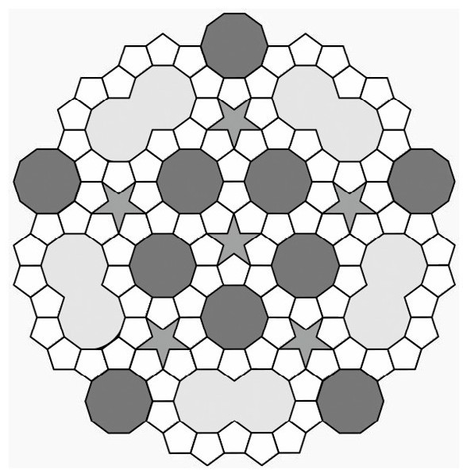
图5.5 正五边形、五角星和“融合的十边形”组成的镶嵌
既然正则镶嵌很容易就能铺满平面，干嘛还要大费周折去找五边形的镶嵌呢？开普勒的成果启发了罗杰·彭罗斯，他发现了一种新的基于五边形的镶嵌，可以非周期地铺满平面。与前面讨论的镶嵌不同，非周期镶嵌无法通过平移复制自身，它不会重复。这种镶嵌曾被认为不存在，但是在20世纪60年代，一种用了大约100种不同砖块的非周期镶嵌被构造出来。此后研究者发现了砖块种类越来越少的非周期镶嵌。让人吃惊的是，彭罗斯居然将这个数字缩减到了2，这两种砖块被称为“风筝”和“飞镖”（图5.6）。这些砖块的所有角度都是π/5的整数倍。正五边形虽然拒绝单独形成镶嵌，却启发了非周期镶嵌的发现。
“风筝”和“飞镖”怎样拼到一起铺满平面的呢？有一种方法是用黑和白对点着色，然后要求相邻砖块的点颜色匹配。另一种方法是匹配砖块上的圆弧。
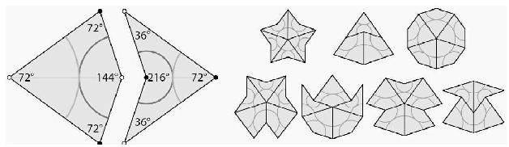
图5.6 风筝和飞镖，以及匹配的方法
彭罗斯镶嵌还通过另一种方式与整数5联系到了一起，用“无理的”二维平面——错开所有高维网格点的平面——对五维超立方体进行切片，就能生成彭罗斯镶嵌。
非周期镶嵌也彻底改变了晶体学。直到20世纪80年代，人们都普遍认为晶体只有2、3、4和6重旋转对称。通过数十年的寻找，2009年，一种准周期的矿物晶体（或简称准晶）被发现。这种物质被称为二十面石，具有标准模型中所不允许的5重对称性。这种准晶是铝铜铁合金，以小颗粒的形式存在。据报道，二十面石在俄罗斯的赛亚山脉被发现，有证据表明它来自地外，据推测是45亿年前由一颗小行星带到了地球。
关于球和香肠
当普通人说“球”的时候，意思可能是球面，也可能是球体。数学家在遣词造句时通常会更精确——有些人会觉得是故弄玄虚或小题大做——因为概念的意义往往取决于背景。球体指的是与给定中心的距离小于或等于半径的点集。球面指的是与给定中心的距离刚好等于半径的点集。用平常的话来说，球体指的是整个实心球，球面则指的是薄薄的球壳，是球体的表面。
我们还得抛弃认为球体和球面仅仅是三维对象的想法。用精确的语言表述，我们将n—球体定义为n维空间中半径为1的球体，n—球面定义为n+1维空间中半径为1的球面。之所以有这个明显的差别是因为我们想让n—球体的体积和n—球面的面积是在相同维度上测量的量。例如，1—球体等同于区间[-1，1]，与原点距离小于等于1的所有点的集合。1—球面是半径为1的圆。请注意1—球面和1—球体都是1维对象。类似地，2—球体是圆盘，2—球面则是标准的3维空间单位半径球面，它们都是二维对象。用Vn表示n—球体的体积，Sn表示n—球面的表面积，则前面几项是V1=2，S1=2π，V2=π和S2=4π。有紧凑的公式可以巧妙地将球体的体积和球面的面积联系起来：
如果只关注体积，这两个公式可以组合成Vn=2πVn−2/n。由于2π＜7，我们可以得出一个不那么直观的结论，当n＜7，n—球体会有最大体积。表5.2列出了前面几项的值。当n=5时Vn取最大值，这又是高维球体与整数5的一个关联。
表5.2 Vn，单位n—球的体积
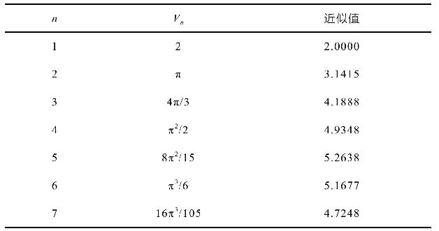
在n维空间中放置n—球体，取球体集合的凸包，球体怎样放置才能让凸包的体积最小呢？显然要把球挨紧，但最佳放置方式并不清楚。香肠猜想认为，当n≥5时，最优布局是将球排成一条线，这样凸包就像一条香肠。这个断言目前只在高维情形下被证明，尤其是当n≥42时。
马的矩形板游程
在第2章我们看到国际象棋棋盘上不可能构造出马从一个角到对角的路径。这个问题问的是，是否任何马的游程的可能性都是取决于棋盘的大小。例如，3×3的棋盘肯定不会有马的游程，因为从周围的8个格子都无法到达中间格子。如果棋盘的某条边太短，马的游程就是不可能的。反过来，有一个干净利落的结果证明，如果两条边都不小于5，则存在马的游程（图5.7）。
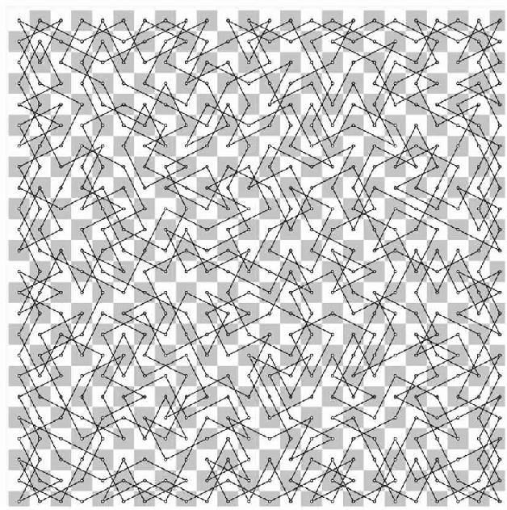
图5.7 24×24棋盘上马的游程
有几种方法可以寻找马的游程。从计算的角度看，分治算法最好用。这个方法是将棋盘切分成小块，在每一块上构造合适的路线，然后将各块组合到一起。还有一个特别的方法是沃恩斯多夫法则，马下一步的移动应当是向前移动数量最少的方块。一些研究者改进了这个方法，可以处理两个或多个方块具有相同的前向移动最少数量的情形。最后要说的是，虽然寻找马的游程是一个可解的计算问题，但是对给定的棋盘存在多少马的游程还是一个尚未解决的问题。
五张牌的魔术
52张一副的标准扑克牌是魔术师的标配，有一个神奇的扑克牌手法，其中利用了整数5。这个被称为菲奇·切尼五牌把戏的手法并不局限于5张牌，对整副牌都管用，因此值得学一学。
先来示范一下。魔术师将牌交给一位随机选择的观众检查并洗乱，然后要求这位观众选出5张牌，将牌交给魔术师可爱的助手，她将其中4张牌交给魔术师，一次一张，魔术师将牌摊在桌面上：K♣、7♢、8♠、J♡。然后魔术师宣布，助手藏起来的第5张牌是2♣。助手嘴角露出迷人的微笑，随之揭开这张牌。
如果扑克牌是随机选择的并且没有标记，魔术师是如何猜出那张牌的呢？关键在于助手。她可以选择留下哪张牌，并决定另外4张牌递给魔术师的顺序，这为魔术师提供了足够的信息，让魔术师可以知道那张牌到底是哪一张。下面来分析一下是怎么回事。我们将看到，标准的52张扑克牌刚好适合这个有趣的把戏。
由于助手有5张牌，而牌有4种花色，因此至少有两张牌有相同的花色，这是所谓的鸽笼原理。如果有m只鸽子想住到n个笼子中，则必然有一个笼子中至少有
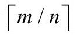
只鸽子，其中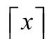
表示不小于x的最小整数。这里是5张牌（鸽子）和4种花色（鸽笼），由于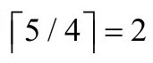
，因此必然有两张牌具有相同的花色。下一步确定花色相同的两张牌的“距离”（如果相同花色的牌不止两张，可以任选其中两张）。令J等于11，Q等于12，K等于13，A等于1，两张牌之间的距离就是最小距离与13取模。例如9和J之间的距离是2。A和10的距离呢？不是9，是4，因为10-J-Q-K-A只需要4步。由于每种花色有13张牌，因此两张牌之间的距离最大为6。
助手将花色相同的两张牌中排在“后面”的那张留下，排在“前面”的那张就是递给魔术师的第一张牌。也就是说，一旦魔术师拿到了第一张牌，他就知道了那张藏起来的牌的花色，并且只剩下6种可能，剩下的3张牌将告诉他到底是哪张牌。要做到这一点，我们先要将一副扑克牌中所有的牌排序，采用桥牌对花色的排序，♣♢♡♠，两张牌先用花色排序，如果花色相同，再用数字排序。比如，K♣＜2♢。将剩下3张牌记为A、B、C，分别表示最前面的、中间的和最后面的牌，则会有6种可能的顺序：
这6种字母序可以分别与数字1到6对应，因此助手在将牌递给魔术师时，只需让牌的顺序与相同花色的前后两张牌之间的距离数字相对应，魔术师就能算出那张牌到底是哪一张。
让我们来实践一下这个手法，还是用之前那5张牌：2♣、K♣、7♢、J♡、8♠。有两张相同花色的牌，K♣在前面，2♣在后面，因此选择2♣藏起来。首先递给魔术师的排是K♣。由于距离为2，因此助手递牌的顺序是最前面的、最后面的和中间的，也就是7♢、8♠和J♡。
足球和穹顶
在这一章前面我们看到，正十二面体是柏拉图多面体，12个面都是正五边形。这个正多面体可以变化一下，形成另一种多面体，也有12个五边形，再加上一些六边形。想象将正十二面体的每个面都直接往外抬升，调整各面之间的间隙，刚好让每个五边形周围放一圈六边形。这会增加20个六边形，从而构成全世界最受欢迎的阿基米德多面体：足球（图5.8）。
这个过程可以继续，围着每个五边形加不止一圈六边形，让间隙变得更大，可以加多层六边形。无论加多少层，总是12个五边形。网格穹顶就是这种结构。最大的网格穹顶是在1967年蒙特利尔世博会上（图5.8）。小心，在里面找五边形可能会很受伤！
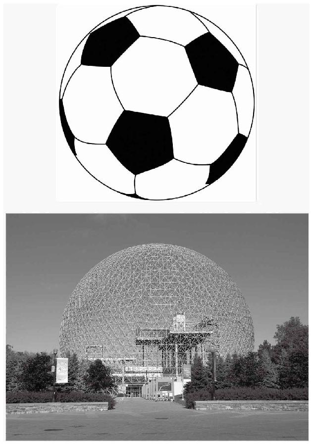
图5.8 足球（上）和1967年蒙特利尔世博会网格穹顶（上）
无限循环
我们知道斐波那契数列中的每个数都是基于前面的两个数得出，我们可以尝试一种不同的递归关系，每一项都是根据以下式子得出：
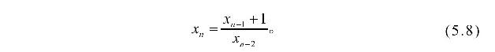
如果x1=4，x2=7，则有x3=2，x4=3/7，x5=5/7，x6=4，和x7=7。由于x6=x1并且x7=x2，因此我们知道这5个数会一直循环下去。如果选取不同的x1和x2呢？神奇的是，得到的几乎都是周期为5的循环。为了证明这一点，我们可以令x1=a,x2=b。得到序列是
唯一不成立的情形是当序列中的某个数为0时，即a=0，b=0，a=−1，b=−1，或a+b=−1。式（5.8）的循环关系有时候也称为利内斯映射。
研究者们寻找了有理形式的具有全局周期性的递归关系：
其中A1，……，An和B1，……，Bn为常数。所有已知的具有全局周期性的递归关系都可以归结为5种可能之一（表5.3）。
表5.3 5种具有全局周期性的递归关系
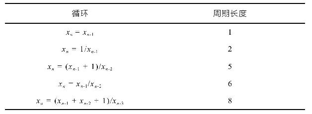
罗杰斯—拉马努金恒等式
美丽的罗杰斯—拉马努金恒等式最初由罗杰斯在1894年发现，后来又由拉马努金在1913年之前的某个时候独立发现。这个公式与连分式和分拆理论有关：
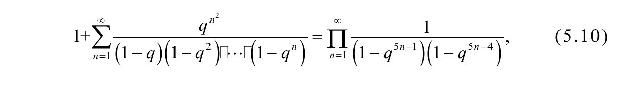
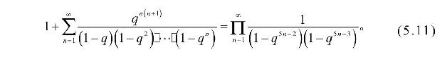
在这一章，我们已经见到了两位夭折的数学天才的浪漫故事，现在是时候加入另一位早夭的数学天才拉马努金（1889—1920）（图5.9）的故事了。拉马努金出生在南印度一个贫穷的婆罗门家族，很小的时候就对数学着迷。他由于数学天分获得了大学奖学金，但又由于着迷于非数学科目（英国史、希腊史、罗马史、心理学）被踢出来两次。虽然拉马努金的家族很贫穷，他们还是让他继续了5年的数学研究，没有逼他出去找工作。拉马努金夜以继日地演算，不断发现与无穷级数、积分、连分式和特殊函数有关的新公式。他随身携带笔记本，一旦发现了自己觉得有价值的结果，就会记在笔记本上，从不示人，因为担心印度人不会知道它的价值，而英国人则会窃取成果。
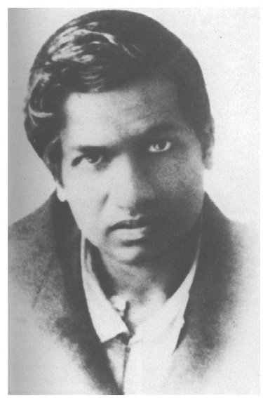
图5.9 斯里尼瓦瑟·拉马努金
虽然拉马努金贫穷又没有地位，但婆罗门的种姓还是给了他一些社会资源。他不断尝试向印度的数学家团体宣传自己的成果，最终，拉马钱德拉·劳认可了他，每月赞助他25印度卢比的津贴。钱不多，但是足以让拉马努金不会有经济上的担忧。
拉马努金被鼓励与英国杰出的数学家联系，最初两位无视他的信件，但第三位，剑桥数学家哈代有了回应。哈代和他的同事利特伍德看到拉马努金的一些数学成果后震惊了。他得出的一些结果已经为人所熟知，早在几十年前就被发现了；另一些需要一些时间来证明，还有一些则似乎完全无法理解。据说吸引哈代注意的是罗杰斯—拉马努金恒等式的一个与连分式有关的引理：
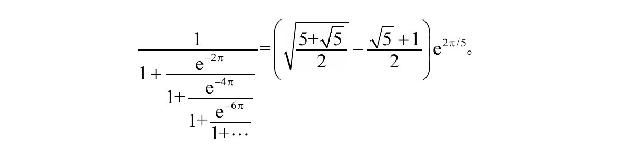
哈代写道：“这些等式一定是对的，因为没有人能够凭空想象出来（卡尼格尔，《知无涯者》，p.111）。”克服了宗教上的禁忌，拉马努金离开印度和哈代一起合作了5年。后来，拉马努金病了，不得不在疗养院休养。身体条件允许后，他回到了印度，希望印度温暖的气候和家人的关爱可以让他完全恢复健康。可惜未能如愿，最终于32岁去世。
与分拆理论有关的罗杰斯—拉马努金恒等式与整数5有密切关联。最简单的分拆函数p（n）是对n可以写成正整数之和的方式进行计数。例如p（4）=5，因为数字4有5种写成正整数和的方式：
4=3+1=2+2=2+1+1=1+1+1+1，
分拆函数增长得很快，哈代和拉马努金对很大的n值得出了近似公式
罗杰斯—拉马努金恒等式蕴含了两个受限分拆形式的定理。第一个定理说的是，如果要求分拆的各部分之间的差值至少为2，则n的分拆数等于分拆各部分与5取余结果为1或4的分拆数。例如，如果取n=9，则不受限的分拆超过30种，第一种分拆方式有5种，
9=8+1=7+2=6+3=5+3+1，
第二种分拆方式也是5种，
第二个定理更为精炼：如果分拆部分的最小差值为2，最小部分为2，则n的分拆数等于分拆各部分与5取余结果为2或3的分拆数。同样以n=9为例，第一种有3种分拆方式，9=7+2=6+3，第二种也有3种方式，7+2=3+3+3=3+2+2+2。
数字5还以另一种重要的方式与分拆有关联。这里我们需要引入五边形数。我们很熟悉正方形数和三角形数，五边形数是通过共用一个点和两条边的五边形构造出来的（图5.10）。第n个五边形数是五边形的每条边有n个点的数。前几个五边形数分别是1，5，12，22，35，51，70，92，117，用gn表示第n个五边形数，则gn=n（3n−1）/2。
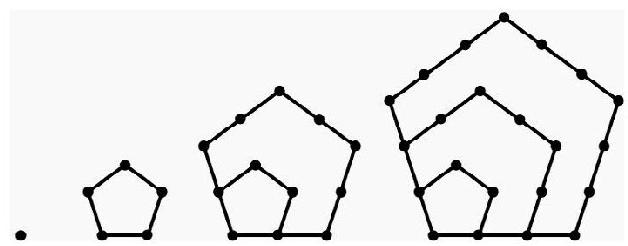
图5.10 五边形数
现在可以展示吸引眼球的欧拉五边形数定理了：
展开形式为
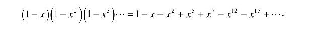
分拆理论的一个基本结果是
这两个等式可以结合到一起构成分拆函数的递归公式：
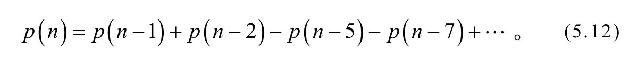
例如，如果我们知道所有n＜30的p（n），则
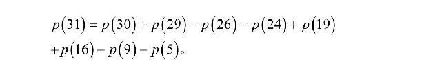
利用式（5.12）计算分拆函数的确切值可以说是快如闪电而且易于实现。